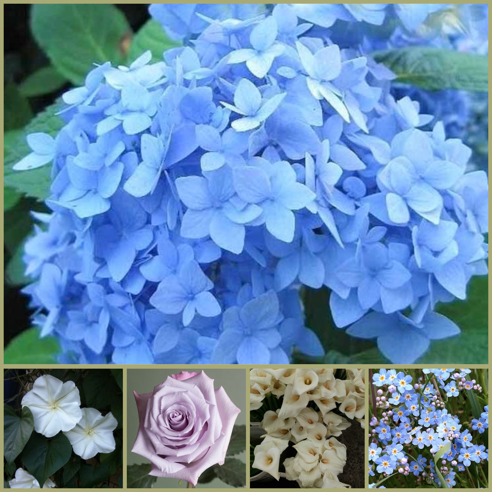
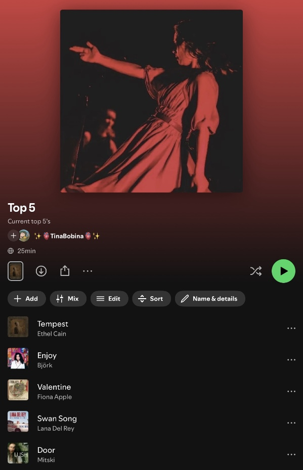

Hydrangea's are my all time favorite flowers and have been since I was in my early teens, specifically blue hydrangea's.
I love them so much that the shade of blue they are is also my favorite color.

There's a very special place in my hear for Valentine by Fiona Apple.
It was the song that made me obsessed with her music and made her one of my top 3 artists of all time.
I'm planning on getting a tattoo dedicated to it sometime soon.